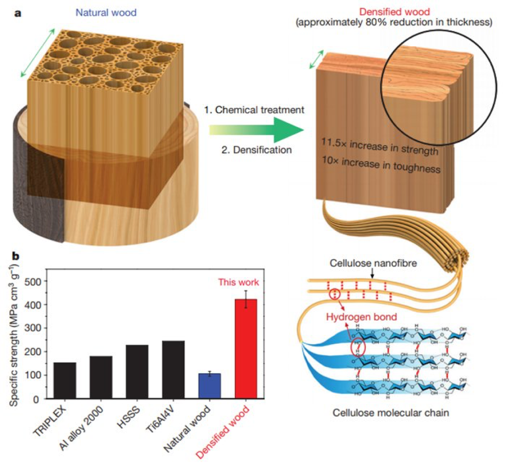

This week’s look at innovation is focused on a highly innovative technology development coming from researchers at the University of Maryland in the form of a densification process for wood. While this emerging technology is not as yet a paradigm changer, it is clearly highly innovative. This wood densification process leads to “super” wood that has the potential to be cheaper, lighter, and as strong as many metals including some steels. See the graphic at the bottom of this article from the Industry Tap News.
The process for forming “super wood” is relatively simple, starting with boiling wood in a bath of sodium hydroxide and sodium sulfite to partially remove lignin and hemicellulose. The boiled wood is then compressed and heated, collapsing the wood cell walls to form tightly-aligned cellulose nanofibers. The highly compressed fibers also form strong hydrogen cross-linked bonds that make the super wood up to 12 times stronger than the original wood. The increased strength and toughness opens up a wide range of structural applications from buildings to aircraft. According to researchers, there is also the possibility to create a transparent form of “super wood” to replace plastic panels.
More complete details can be found here.
Could this be a paradigm changer? What do you think?
